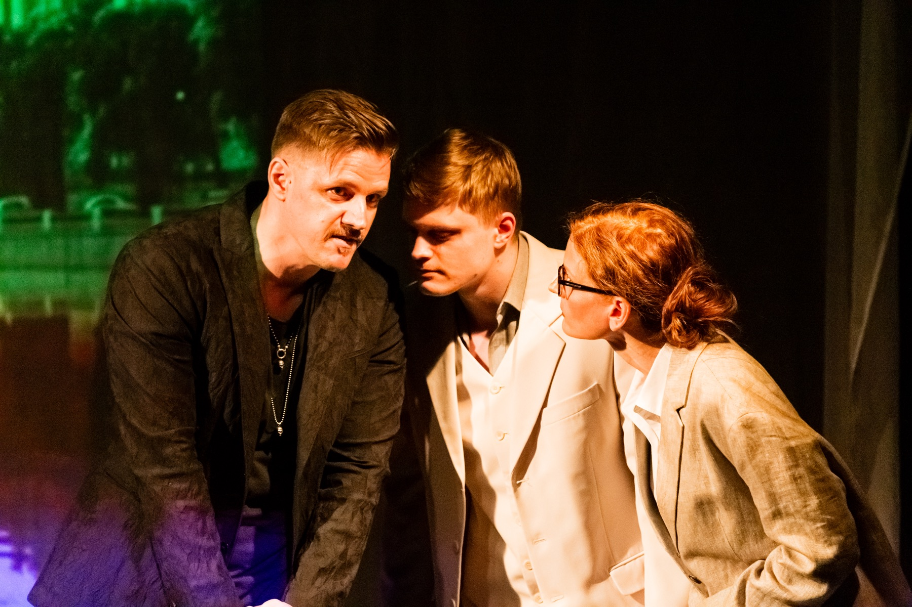
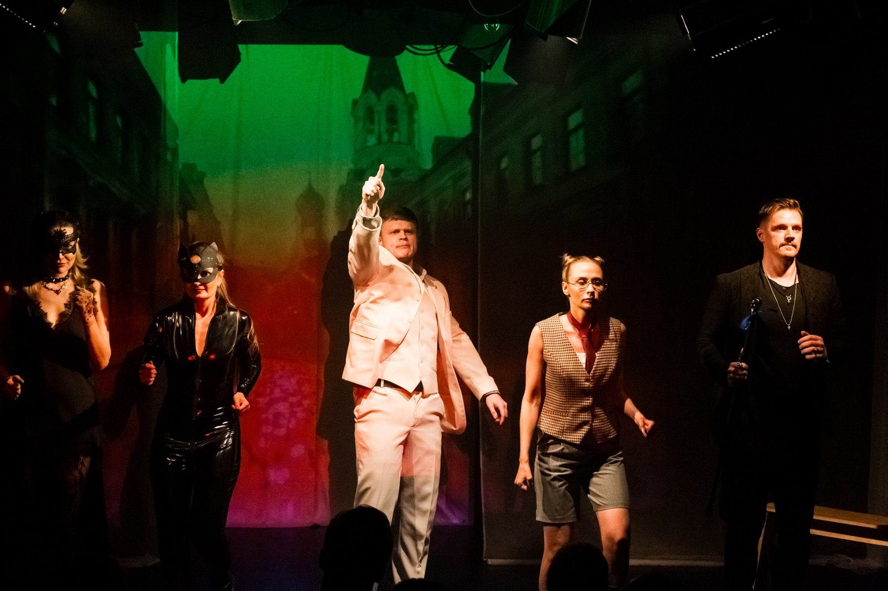
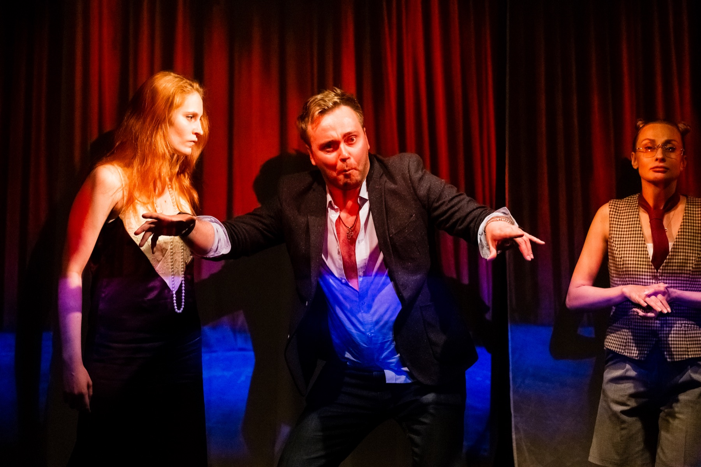
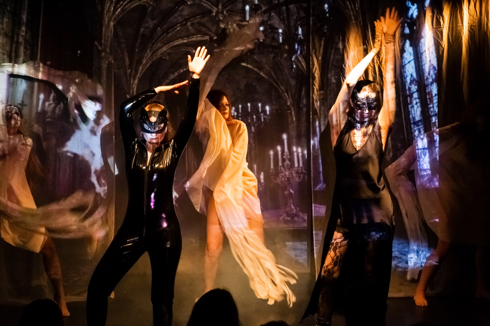
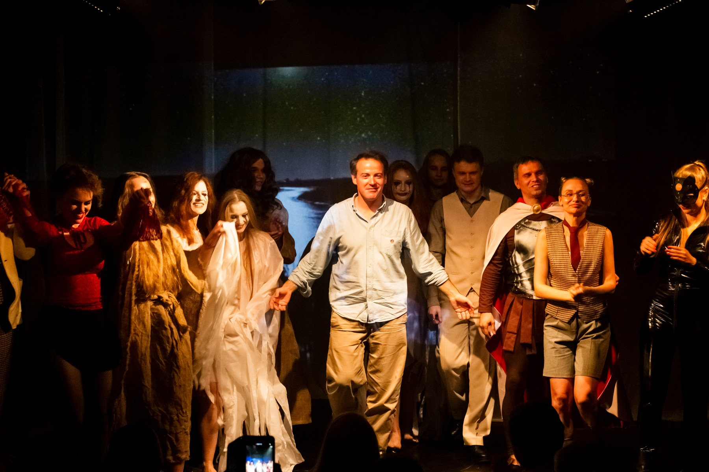
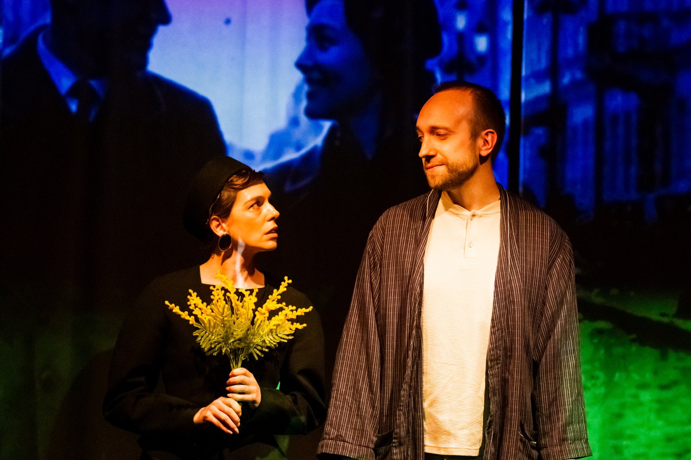
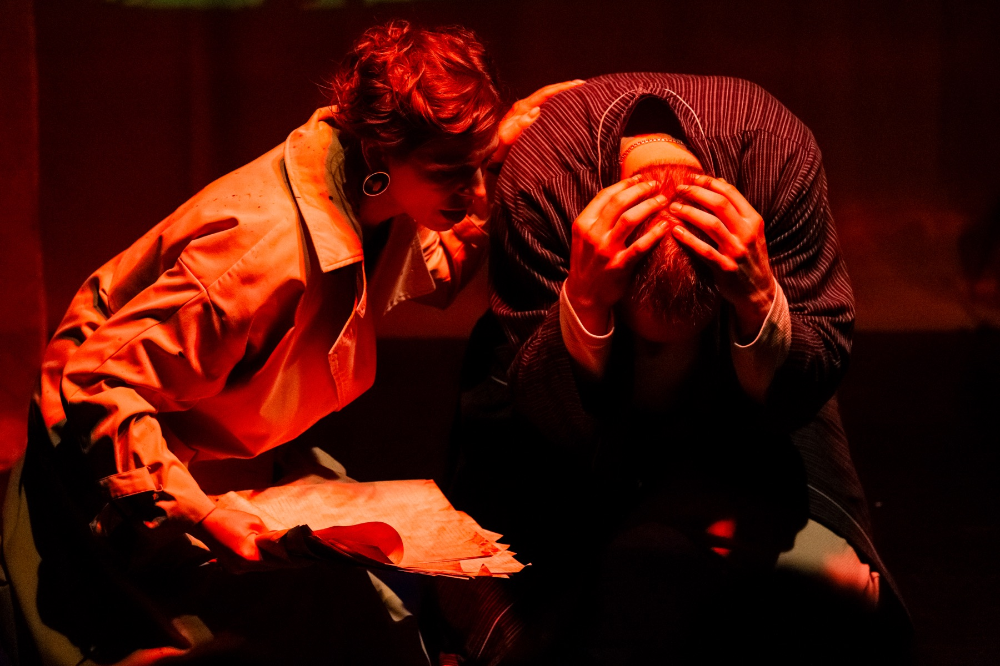
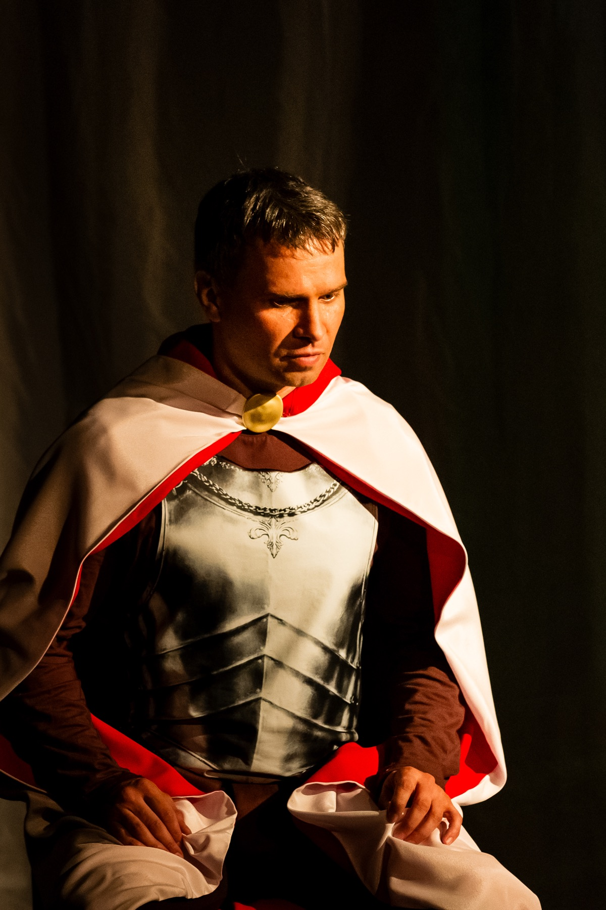
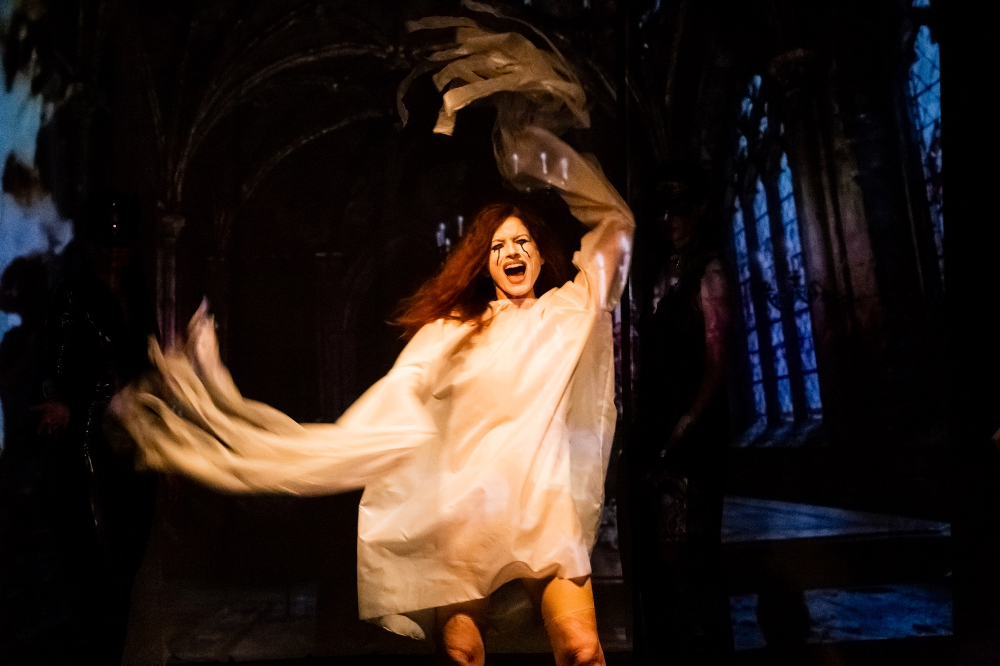

Плотная работа с режиссером и педагогами в маленькой группе.
Ноябрьский набор / Москва
Взрослые и детииграют всерьез
Камерная театральная студия для взрослых и детей: маленькая группа, педагоги из сильных московских театров и роль на сцене в финале курса.
Открыт набор в ноябрьскую группу
6 месяцев / 2 раза в неделю / финальный показ на сцене Оставить заявкуОт первого занятия - к роли на сцене перед зрителями.
В больших театральных школах студент часто становится одним из многих. У нас маленькие группы, поэтому режиссер видит каждого: подбирает роль, замечает сильные стороны и помогает развить их с помощью точных правок. У нас каждый человек выходит на сцену как полноценный участник спектакля.
Педагоги - действующие актеры МХАТ им. Горького, театра Вахтангова и театра Ермоловой.
Финал курса - роль в спектакле на сцене Театра современной драматургии.
После курса есть продолжение: актерские среды, лаборатории, новые показы, новые роли.
Учимся действовать на сцене: слышать партнера, держать внимание зрителя, владеть голосом, телом и ролью.
В актерских практиках тренируем внимание, голос, тело и свободу существования на сцене.
Разбираем роль через задачу, мотив, действие и отношение к партнеру.
Репетируем сцены, собираем мизансцены и доводим материал до финального показа.
Четыре шага до сцены
Вход в роль
Понимаем, как устроена сцена, партнерство и актерское действие.
Репетиции
Пробуем разные решения, работаем с текстом, телом, голосом и вниманием.
Сборка спектакля
Соединяем роли, сцены, мизансцены, свет, звук и общий ритм показа.
Премьера
Выходим на сцену перед зрителями в полноценной роли.
Можно войти аккуратно. Можно сразу идти в курс.
Полугодовой курс
Идем от актерских практик к репетициям и собираем спектакль, где у каждого есть полноценная роль.
Актерская среда
Тематические мастер-классы. На каждом тренируем один конкретный навык: проявленность, выразительность, убедительность, работу с камерой, вживание в роль или самопробы. Проводим встречи с режиссерами и кастинг-директорами, чтобы студенты понимали, как устроены кастинги и работа в профессии.
Кинокурс
На каждом занятии учимся работать перед камерой, держать внимание в кадре и снимаем актерские видеофрагменты.
Актерские среды
Тематические мастер-классы для тех, кто хочет регулярно тренировать актерские навыки, встречаться с режиссерами и кастинг-директорами и пробовать себя в сцене и кадре.
Календарь ближайших мастер-классов
Расписание в разработке
Здесь появятся даты, темы, педагоги и ссылка на запись.
Педагоги из театров, где сцена - их ежедневная работа.
Юрий Коновалов
актер МХАТ им. Горького, режиссер, сценарист, педагог
Максим Бойцов
актер МХАТ им. Горького, педагог
Семен Шевелин
актер МХАТ им. Горького, педагог
Диана Прокопив
актриса театра им. Ермоловой, педагог по вокалу
Николай Коротаев
артист МХАТ им. Горького, педагог
Эльвира Цимбал
актриса МХАТ им. Горького, Театра Вахтангова, Театра "Виват"
Спектакли, которые уже ставил Правда Театр.
«Балаган»
по пьесе Чарльза Мори
«Мастер и Маргарита»
по мотивам романа М. Булгакова
«Человек из Подольска»
по пьесе Дмитрия Данилова
Сцены из наших спектаклей.

01
02
03
04
05
06
07
08
09Цены и условия
Взрослый курс
120 000 ₽
за 6 месяцев обученияДетский курс
110 000 ₽
за 6 месяцев обученияРанняя предзапись
-20%
есть оплата в рассрочкуПосле просмотра сайта человек должен понять: